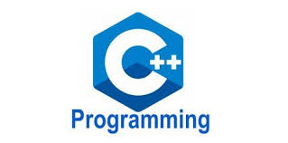
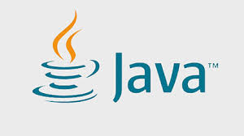

Imagine you're building a house. You wouldn't just start hammering nails without a blueprint, right? Similarly, when we build software or websites, we need a language to communicate with the computer. That language is called a "coding language".
A coding language is a set of rules and instructions that we use to tell a computer what to do. It's like a secret code that only computers can understand. By learning a coding language, you can create amazing things, from simple websites to complex video games.
Pleas visit the photo gallary of our Course here ↓
photo gallaryReady to embark on your coding journey? Let's go!

C++ is a versatile programming language that has been used to create a wide range of software, from operating systems to video games. It's known for its performance and flexibility, but it can also be a bit more complex than other languages.
A typical C++ program consists of the following:
#include
using namespace std;
int main() {
// Your code goes here
cout << "Hello, world!" << endl;
return 0;
}
Let's break down each part:
#include : This line tells the compiler to include the iostream header file, which provides input/output functionalities like cout for output.
using namespace std;: This line allows us to use standard C++ components without the std:: prefix.
int main(): This is the entry point of every C++ program. The int return type indicates that the function returns an integer value.
cout << "Hello, world!" << endl;: This line prints "Hello, world!" to the console.
return 0;: This line indicates successful program termination.
You'll need a C++ compiler and a code editor. Popular options include:
Create a new text file and save it with a .cpp extension (e.g., hello.cpp).
Copy the basic C++ program structure into your file.
Use your compiler to compile the code into an executable file. For example, using the GCC compiler:
g++ hello.cpp -o hello
Run the executable:
./hello
#include
using namespace std;
int main() {
const double pi = 3.14159;
double radius;
cout << "Enter the radius of the circle: ";
cin >> radius;
double area = pi * radius * radius;
cout << "The area of the circle is: " << area << endl;
return 0; 1
1.
}
This code takes the radius of a circle as input, calculates its area using the formula pi * r^2, and prints the result to the console.
Remember, C++ can be a bit more complex than other languages, but with practice and understanding of its core concepts, you can create powerful and efficient programs.

Java is a popular programming language known for its platform independence, object-oriented nature, and strong security features. It's widely used for developing a variety of applications, including web applications, Android apps, enterprise software, and more.
A basic Java program typically consists of the following:
public class HelloWorld {
public static void main(String[] args) {
System.out.println("Hello, World!");
}
}
Let's break down the components:
public class HelloWorld: This line declares a public class named HelloWorld. In Java, every program must have at least one public class.
public static void main(String[] args): This is the entry point of any Java application. The main method is where the program execution begins.
System.out.println("Hello, World!");: This line prints the message "Hello, World!" to the console.
You'll need a Java Development Kit (JDK) and a text editor or IDE.
Create a new text file and save it with a .java extension.
Copy the basic Java program structure into your file.
Use the javac compiler to compile the Java source code into bytecode and the java command to execute the compiled class.
public class CircleArea {
public static void main(String[] args) {
double radius = 5.0;
double pi = 3.14159;
double area = pi * radius * radius;
System.out.println("The area of the circle is: " + area); 1
1.
github.com
github.com
}
}
This code calculates the area of a circle with a radius of 5.0 and prints the result to the console.
By understanding these basic concepts, you can start exploring the vast world of Java programming.
Python is a popular programming language known for its simplicity and readability. It's widely used for a variety of applications, including web development, data science, machine learning, and automation.
A basic Python program consists of a sequence of statements:
print("Hello, World!")
This simple line of code will print "Hello, World!" to the console.
You'll need Python installed on your computer.
Create a new text file and save it with a .py extension.
Write your Python code directly into the file.
Open your terminal or command prompt, navigate to the directory where you saved the file, and run the following command:
python your_file_name.py
import math
radius = 5.0
area = math.pi * radius * radius
print("The area of the circle is:", area)
This code imports the `math` module, calculates the area of a circle with a radius of 5.0, and prints the result to the console.
By understanding these basic concepts, you can start exploring the vast world of Python programming.
Home page